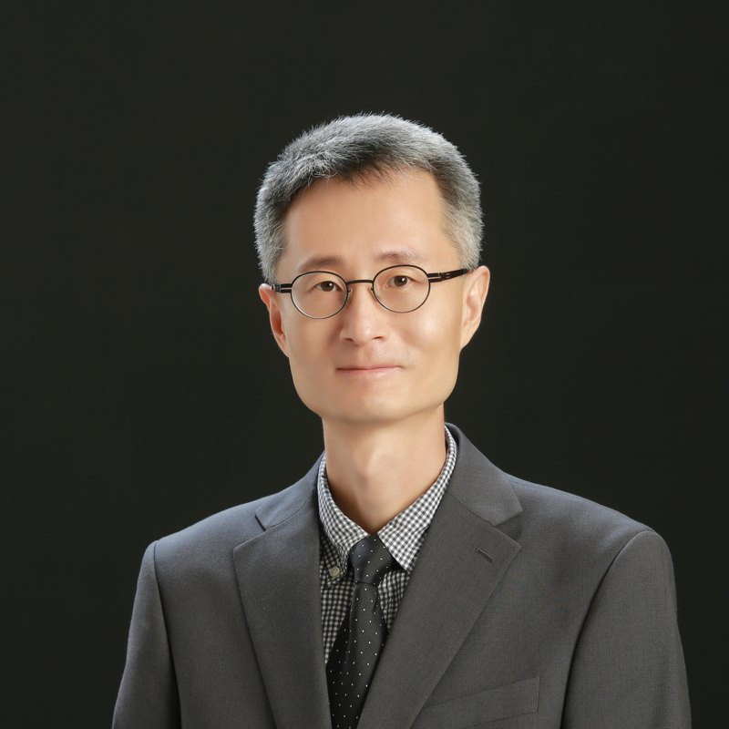

ABOUT US
ISC-SKKU Seoul(성균관대 유학생교회)은 예배, 교육, 훈련, 양육, 교제를 통해 유학생들의 신앙 성장을 지원하며, 유학생들이 겪는 영적·생활적 어려움을 함께 나누고 사랑으로 섬기는 공동체입니다.
특히 유학생들이 졸업 후 본국으로 귀국하더라도 복음을 증거하는 선교적 제자로 살아갈 수 있도록 준비시키는 것을 중요한 사명으로 삼고 있습니다. 예배는 한국어와 중국어로 함께 드리며, 중국으로 귀국한 졸업생들도 온라인으로 계속 참여하고 있습니다.
한국에 온 지 얼마 되지 않으셨어도, 교회가 처음이셔도 괜찮습니다. 언제든지 편하게 찾아와 주세요.
OUR TEAM

ISC-SKKU Seoul을 담임하며 캠퍼스에서 만난 유학생 한 사람 한 사람을 말씀과 기도로 섬기고 있습니다.


WORSHIP
현장 예배와 Zoom 온라인 예배를 함께 드립니다. 처음 오시는 분도 언제든지 환영합니다.
매주 일요일 오후 3:00
말씀 선포, 찬양, 기도, 나눔. 예배 후 셀 모임과 격주 애찬 교제가 이어집니다.
매주 수요일 저녁 6:00~9:00
교회 부흥과 영적 각성을 위한 집중 기도의 시간입니다.
주일예배 후
말씀을 나누고 서로의 삶을 위해 기도하는 소그룹 모임입니다.
평일 상시 개방
학습 공간과 커피·차가 준비된 유학생들의 영적·학업적 쉼터입니다.
MINISTRY
유학생 한 사람이 예수님을 만나고, 제자로 자라며, 본국으로 돌아가 복음을 전하기까지 함께 걷습니다.
정기적인 세례 교육과 세례식을 통해 새 생명들이 그리스도 안에서 거듭나고 있습니다.
유학생의 제한된 체류 기간을 고려한 집중적이고 체계적인 양육: 심화 성경공부, 리더십 훈련, 신앙 기초 확립.
차세대 유학생 사역 리더를 세우기 위한 리더십 개발, 섬김 훈련, 사역 실습.
교재 「복음의 기초」로 유학생 리더와 교수진이 함께하는 소그룹 성경공부를 진행합니다.
GALLERY


NEWS & BULLETIN
이번 주 소식
ONLINE WORSHIP
주일예배 실황과 설교 영상은 유튜브 채널에서 보실 수 있습니다. 아래 목록은 새 영상을 올리면 자동으로 갱신됩니다.
VISIT US
FIRST VISIT
교회가 처음이셔도, 한국어가 서툴러도 괜찮습니다. 오시는 순간부터 저희가 함께하겠습니다.
주일 오후 2시 50분까지 오시면 넉넉합니다. 명륜길 22 건물 2층으로 올라오세요.
입구에서 맞아 드립니다. “처음 왔어요”라고 말씀해 주시면 자리까지 안내해 드립니다.
오후 3시에 시작해 약 한 시간입니다. 찬양과 말씀을 한국어와 중국어로 함께 나눕니다.
예배 후 셀 모임과 다과가 있습니다. 부담되시면 먼저 돌아가셔도 괜찮습니다.
자주 묻는 질문